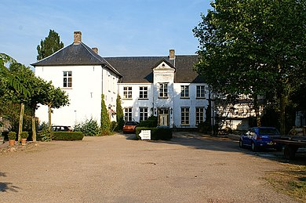

De Aurora is een standerdmolen in het Limburgse Baexem in de Nederlandse gemeente Leudal. De molen is in 1845 gebouwd. De familie Canoy had als eerste de molen in haar bezit. Het hout van het onderstel zou afkomstig zijn van de oude galg van Haelen. De molen is in bedrijf geweest tot molenaar Grubben in 1945 tijdens onderhoud aan de wieken dodelijk verongelukte. De molen werd door zijn weduwe verkocht en kwam stil te staan. In 1968 is de Aurora verkocht aan de toenmalige gemeente Baexem, die de molen heeft laten verplaatsen en restaureren. De oude roeden van de Aurora zijn toen overgeplaatst naar De Roosdonck in Nuenen. In 1971 is de molen feestelijk in bedrijf gesteld. Burgemeester G.A. Canoy heeft bij de oprichting van Zangvereniging Aurora, voor de naam van de molen gekozen. De Fanfare Aurora van Baexem is voorgekomen uit deze zangvereniging. Naast de molen is een modern molenhuis gebouwd, waarin van alles over de Auroramolen tentoongesteld is.
 Het kasteel werd voor het eerst schriftelijk vermeld in 1244. De eerste bewoners waren telgen van de familie Van Baexen of De Baexen. Mogelijk namen enkele ridders uit Baexem deel aan de Slag bij Woeringen, die plaatsvond in 1288. In de 17e eeuw was de familie Rode van Opsinnich (of: Rhoe van Opsinnich) eigenaar, en vanaf 1726 de familie Van der Marck. Dit bleef zo tot in de 19e eeuw. Eind 19e eeuw werd het kasteel gesplitst en werden er nog een aantal verbouwingen uitgevoerd. Het interieur onderging in de 19e en 20e eeuw ingrijpende veranderingen. Het oudste deel van het huidige kasteel zijn de kelders. De huidige gebouwen zijn van 1676 en jonger. De vleugels zijn in de 18e eeuw bijgebouwd, waardoor het gebouw een symmetrisch aanzien kreeg. De ingangspartij is voorzien van een risaliet, voorzien van een fronton. Rechts van de ingang heeft een donjon gestaan, waartegen enkele vakwerkhuizen gebouwd waren. Het kasteel was vroeger omgracht. Het kasteel is niet te bezichtigen maar men kan in de vernieuwde b&b wel overnachten.